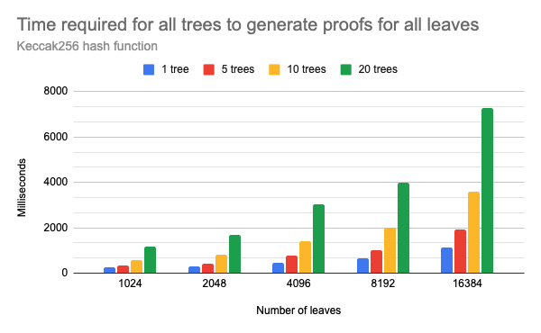
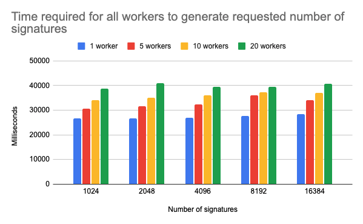

Executive Summary
Utilizing Blockchain comes with big limitations when it comes to storing a larger number of documents on the chain. Another problem arises when a large number of documents must be stored on the chain with minimal delay - real-time. In those cases, the time and financial costs may become overwhelming. This research aims to find the solution for this issue by combining off-chain issuing techniques and on-chain commitments to maximize throughput while minimizing costs from the number of transactions required to store the commitments. The solution is formulated as a hybrid (on-chain/off-chain) protocol called Minty.
Introduction
While higher utilization of Blockchain in formerly pure Web 2.0 use-cases is a trend, some obstacles prevent a smooth transition to Web 3.0. Most of those issues are known scalability issues, combined with high transaction costs. Two scalability issues closely related to the costs of using Blockchain in business are the number of transactions that could be processed in a second (TPS) and the size limit of the transaction. The TPS metric can easily trick the user into thinking that 1,000s of transactions per second would mean that he or she can submit 1,000 transactions and expect them to be included in a block after a one-second delay. Unfortunately, that assumption would be wrong, and we can prove that with a simple counter-example. Let us assume that TPS is 10,000 transactions, ten times more than the user needs. Although Blockchain protocols could indeed process 10,000 transactions per second, there could be at least 9,001 other transactions from different users waiting to be accepted. In this case, it is impossible to have 10,001 or more transactions in one block, so at least one transaction will have to wait for the next block - breaking the one-second expectation. The last nail for this assumption is the requirement to have all transaction nonces ordered correctly. If one sends 1,000 correctly ordered transactions to the miners, there are no guarantees that the miners will sort them correctly, leaving transactions out of order for the next block. As the Blockchain becomes more utilized, the issue will become more severe. To make the situation worse, some transactions may offer better gas prices than others, prioritizing them and delaying other transactions even further.
Another issue is submitting 1,000 transactions on an EVM blockchain, which requires at least 21,000 gas per transaction. Those amounts may quickly add up costs and disincentivize further use of Blockchain (at least use of mainnet).
The main question is how realistic it is to have a use case where it is required to execute 1,000s of transactions in a short time. The answer is not clear as the question is not correctly formed. If use cases, for some reason, specifically require 1,000s of separate transactions to be executed, then there is no better solution than waiting for faster blockchains. A better question might be how realistic it is to have a use case where it is required to write 1,000s of data blocks on Blockchain often. The answer might be - not a lot, but the numbers will quickly rise as soon as the more efficient solution for performing the task appears. In that case, it becomes reasonable to investigate the possibilities of having much fewer transactions than the number of data blocks and explore off-chain solutions, such as ZK proofs and signatures, to reduce the costs of writing on Blockchain.
Goals & Methodology
This research will focus on a generic example problem, minting 1,000s of generic documents in short intervals, which can be easily specialized for any use case requiring minting high volumes of data in a short time. The following sections will also present a concrete example of a real-world use case.
Before we get into details, we shall first define some basic assumptions. The worst-case scenario is putting the data of each document on Blockchain in separate transactions. The more reasonable scenario is writing documents in batches of
- TPS is 1,000 (currently much lower)
- One user gets to have all transactions in all blocks until the document storing is complete (possible only on private chains)
- Every document consists of only five
bytes32elements (a reasonable amount of data) - One transaction contains 30 documents (reasonable limitation)
The number of transactions in a block would be ~93, which enables storing only 2790 documents per second. On the other hand, having a low gas price of 10 gwei, for 30,000,000 gas, the cost would be 0.3 native coins. On Ethereum, with the price of $1500, the cost would be 0.3 * $1500 = $500. Executing the same transaction on Polygon L2, the price would be only 0.7 * $1 = $0.7. This is the price for having 2790 documents stored on-chain under pretty unreal circumstances. To store all 100,000 documents, the total cost would be ~12 coins ($18000 on Ethereum and $12 on Polygon), which would take around 36 seconds. To summarize, the lowest theoretical boundary for storing 100,000 * 5 bytes32 elements, under given circumstances, is 36 seconds and $12. In practice, the time delay would be much higher as executing ~3,333 transactions from one user in 36 seconds would only be possible on a private chain.
What if the requirement is to store data of 100,000 documents in 10 seconds with a high probability? How could it be achieved? The only way to reduce the number of transactions executed on Blockchain is to reduce the amount of data that has to be written. There is, of course, a possibility to increase the number of documents in a batch, but we are already hitting the boundary with that in the previous example. When there is a requirement to store exactly 100,000 documents, there are two options: - Compress the data to have more of the smaller documents in batches; the example would be storing hashes of data. - Store no data but generate signed documents off-chain - Store single commitments for multiple data; the example would be storing a root hash of a Merkle tree built from documents.
In each case, we assume the user will receive proof that the document belongs to a commitment and can materialize (mint) its data on the chain by providing the proof.
The first solution might be tempting for smaller amounts of data. However, it reduces the number of transactions for a constant factor (5 in the previous example), which would not be very helpful when data quantity increases.
The second solution is very similar to OWT and represents an ideal solution from a theoretical perspective. However, the issue arises from the time required to generate a large number of signatures, which is much higher than a Merkle tree construction time. The comparison is provided in the results section.
The third option is more suitable for handling large quantities of data, as it scales much better. On the other hand, the construction of the Merkle tree grows exponentially with the number of documents, so the time required to generate bigger trees adds another limit to the number of documents processed in a given time after a certain threshold. Nevertheless, the Merkle tree solution has better potential, as one can generate multiple Merkle trees in parallel (on multicore processors or multiple servers), which can scale document processing to another level. This fact leads us to an outstanding balance between the number of transactions, the number of processed documents, and the time required to prepare and write the data - the parallel computation of multiple Merkle tree roots and writing multiple roots in one transaction. In this scenario, there are better guarantees that a single storage transaction will be executed in 10 seconds while storing
Results & Discussion
The assumption of efficiently generating Merkle roots in a parallel way, as data commitments, was put to the test. A simple but representative use case assumed storing trading cards on Blockchain (similar to NFTs but more straightforward). The card consists of an ID, image number (associated with image URL) and owner address. The goal was to enable storing commitments of 100,000 cards in 10 seconds. The flow consisted of generating
The following charts represent the time and speedup results when using parallel tree generation.
Speedup in number of processed leaves per second when generating multiple trees in parallel compared to a single tree with the same number of leaves. The results assume not just tree generation but also proof generation for all leaves of all trees

Chart of the time required to generate all proofs when using different number of workers in parallel
As expected, the time delays increase exponentially with the number of leaves. The speedup of ~4x correlates with the number of CPU cores left available for the workers minus the overhead from communication costs when moving larger data (proofs) between parallel workers and the parent process. We can notice that even with only 20 parallel processes, the communication overhead is clearly observable. Also, 20 parallel workers could generate
Nevertheless, the results gave us some insights into the parameter values. Additionally, the time required to generate document signatures in parallel was also evaluated, as the off-chain signature issuing approach was a direct competitor of the Merkle tree approach. The results show that the parallel Merkle tree generation approach wins this comparison up to a large number of documents, as the time complexity for generating multiple signatures grows linearly with the number of documents but with much higher base costs. It is important to note that the signature generation results do not discard the possibility of using the signature approach but show that the Merkle trees are a more efficient approach.

Chart of the time required to generate all signatures when using different number of workers in parallel
The full test consisted of generating document hashes for 1,000,000 documents, generating commitments for 100,000 documents per batch using up to 20 parallel workers with a maximum of 16,384 leaves. Finally, the resulting commitment was sent to Blockchain (Ganache) asynchronously after each batch. The time required for the entire process to complete and store all 1,000,000 document commitments as root hashes of batches was ~55s, or ~180,000 processed documents per 10s. The costs of storing commitments on L2 chain like Polygon would be around $27 per day (having the gas price of 100 gwei), for storing commitments of 1.44 billion documents.
The parameters can and should, be tuned according to the use case. Suppose the number of documents that should be processed per second is insignificant, and higher delays are allowed. In that case, 1,000,000 or more documents could easily be represented as one commitment stored on Blockchain. This approach allows for semi-real-time document processing with minimal delay.
Document materialization on Blockchain
The smart contract consists of functions for storing commitments and functions used to mint the cards from commitment proofs. The owner of the commitment proof mints the card by providing card data to the smart contract along with inclusion proof and the ID of the corresponding commitment. The smart contract verifies the proof and mints a new card with the given data. The card owner can only do the minting as the message sender’s address is used for the owner’s address. The owner can also mint the card to a different address, where the same process applies, with the only difference being the card minted with a different owner’s address. The one-time overhead costs for the users to mint and/or transfer their documents on the chain are minimal, especially when L2 solutions, like Polygon, are used.
The entire protocol for generating a massive number of documents using off-chain proofs and commitments was assigned the name Minty.
Conclusion
The results show that the approach of using parallel off-chain proof generation and storing commitments on the chain enables semi-real-time minting of a massive number of documents with high saves in costs when compared to direct on-chain minting. The example use-case can be further expanded to cover NFTs or any other types of documents which could be minted on the chain. Future research should cover specific applications of the presented protocol and estimate its value in various use cases.